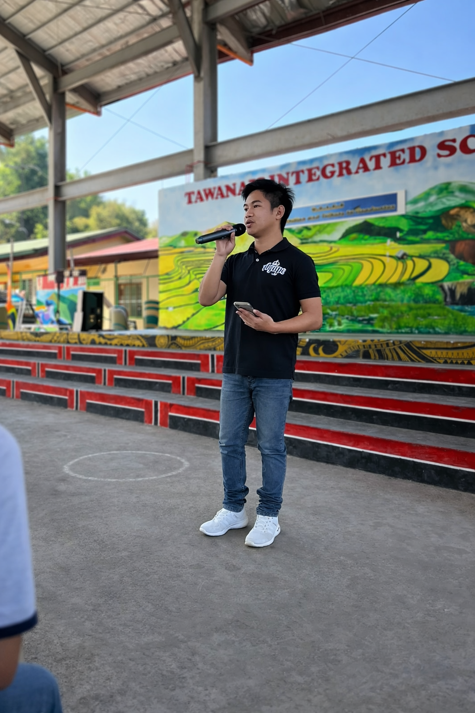
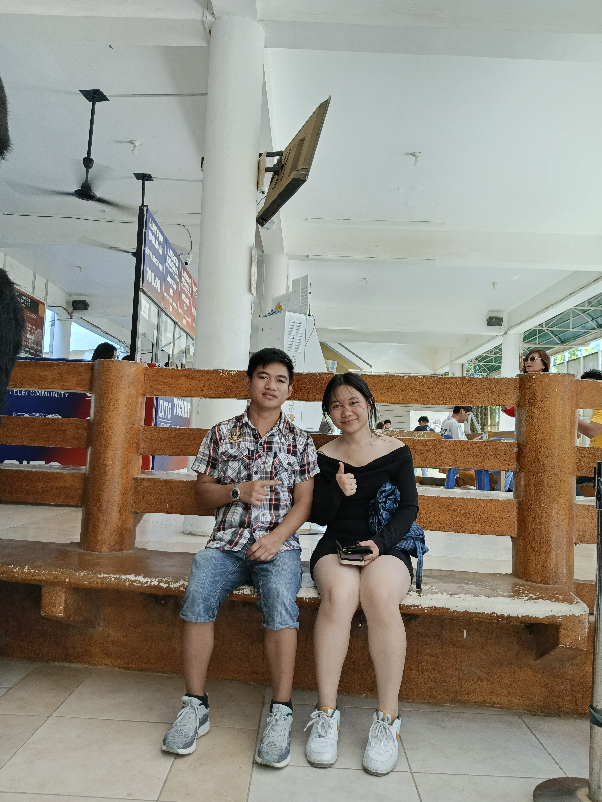
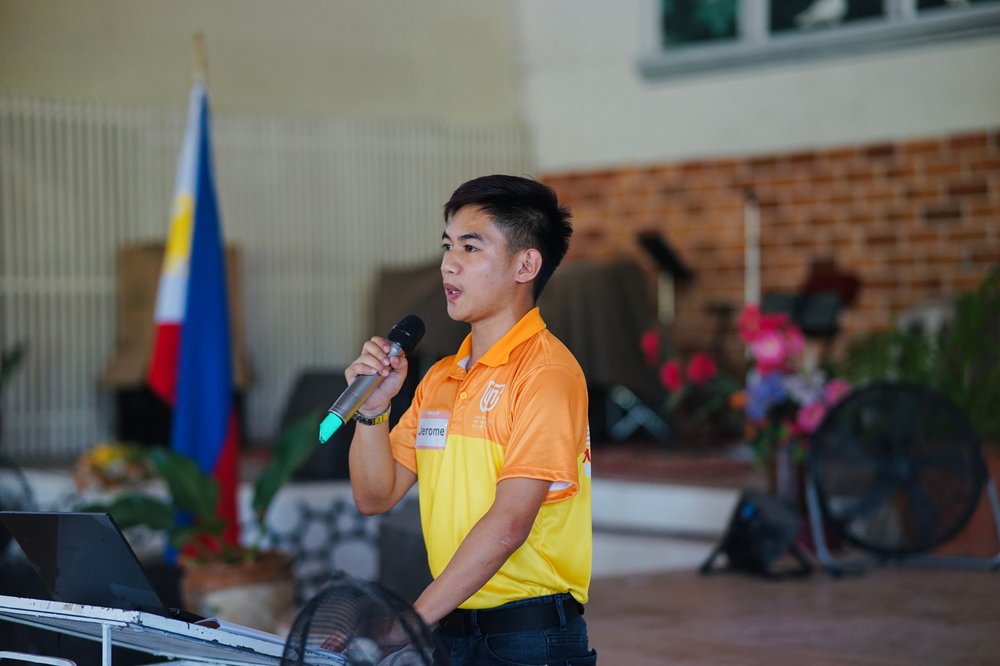

Hi, I'm Jerome and I transform digital ideas into reality
My journey from the mountains of Benguet to the global digital landscape.
.JPG)
.jpg)



The Beginning
I was born in Benguet, the strawberry capital of the Philippines. Driven by curiosity and digital strategy, I set out to master how content spreads across global feeds. As a graduate of Information Technology with certifications in Data Analytics, I discovered that data and creative storytelling were the exact tools needed to crack social algorithms and drive real business revenue.
Discovering My Path
I bridge the gap between brand storytelling and algorithm science. By analyzing audience behavior and platform trends, I create scroll-stopping content that turns passive viewers into loyal customers. My superpower? Taking one piece of content and repurposing it across 4 platforms to maximize ROI. Here you will find my campaigns, viral strategies, and proven growth metrics.
Quick facts
Home town
La Trinidad, Benguet, Philippines
When I started as a specialist
2022 (Turning a passion for technology into professional creative services).
My Memory Verse
Proverbs 3:5-6
Trust in the Lord with all your heart and lean not on your own understanding; in all your ways submit to him, and he will make your paths straight.
Specialties
Web design, Graphic design, Social media management, and Email marketing. I love creating visuals that actually convert.
Hobbies
Exploring new design tools, staying updated with digital trends, and creating meaningful visual content.
If I wasn't a designer
I’d likely be a full-time educator or a Graphics specialist.
Favourite quote
“See the extraordinary in the ordinary.”
Professional Training & Certifications
Creative Web Design (Northridge Institute of Business and Technology Inc. – Baguio)
Data Analytics Level III (Northridge Institute of Business and Technology Inc. – Baguio)
TEFL Professional Institute (Teacher Record Online)
My Mission
My goal is to help brands and individuals find their unique voice in the digital world. I believe that good design is more than just aesthetics—it's about solving problems and creating connections that last.
Benguet: Tourist Spots & Products
Experience the magic of my hometown through our interactive highland Reels or classic grid view.


Strawberry Farm
The Sweet Heart of La Trinidad
Strawberry Farm
The Sweet Heart of La Trinidad
World-famous agricultural farm where visitors can pick fresh, succulent strawberries. The rich volcanic soil and cool mountain climate of Benguet yield the sweetest and most robust berries in the country. Picking your own strawberries while surrounded by the fresh mountain breeze is a staple highland experience.
Strawberry Farm
La TrinidadWorld-famous agricultural farm where visitors can pick fresh, succulent strawberries. The rich volcanic soil yields the sweetest berries in the country.
Igorot Cultural Heritage
Benguet HighlandsThe heart of Benguet is its people. Traditional weaving, gong music, and sacred dances represent a deep connection to the ancestor lands.
Valley of Colors
Stobosa, La TrinidadA massive, colorful hillside community mural that transforms a residential hillside of stone houses into a single cohesive visual masterpiece.
Benguet Coffee Blend
Atok & KibunganGrown at extreme highland altitudes, premium Benguet Arabica coffee boasts sweet, chocolatey undertones and a rich highland aroma.
Mount Pulag
Kabayan, BenguetThe third-highest peak in the Philippines, famous for its majestic 'Sea of Clouds' and freezing dwarf bamboo summits.
Northern Blossom Flower Farm
Atok, BenguetEndless terraced fields showcasing stunning rows of snaps, cabbage roses, and colorful flowers with breathtaking mountain backdrops.
Atok Highest Point
Halsema HighwayRising to 7,400 feet above sea level, this landmark offers panoramic mountain decks. Frost blankets fields during peak winter months.
Highland Fresh Produce
Trading PostThe rich volcanic soil of Benguet's terraces supplies organic cabbage, carrots, and highland greens to feed the entire nation.

Comments (482)